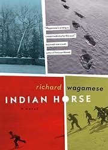
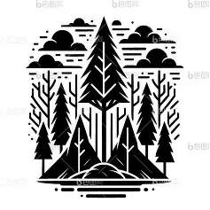

BIRTHPLACE
ETHNIC GROUP
SIXTIES SCOOP

He is a survivor of the Sixties Scoop.

Richard Wagamese was abandoned at age two by adults during a drinking trip. He was later taken by child services and grew up in foster care, suffering abuse before leaving at 16.
He struggled with homelessness, addiction, and imprisonment, but found refuge in public libraries. At 23, he reunited with his family, where an elder named him "Buffalo Cloud" and told him his purpose was to tell stories.
Indian Horse, Medicine Walk, Embers, Keeper'n Me.
The story of Indian Horse tells the tale of Saul Indian Horse, an Indigenous boy who was forcibly enrolled in the Canadian Indian residential school system as a child, where he suffered abuse and racial discrimination.
Later, Saul discovers his talent for hockey and finds hope and success through the sport. However, societal discrimination and childhood trauma continue to affect him, leading him into a period of confusion and alcoholism.
Ultimately, by reflecting on and confronting his past, he begins to understand his trauma and finds self-healing.
This book primarily explores:
History, Culture, Land, and Healing.
What I learned from his legacy.